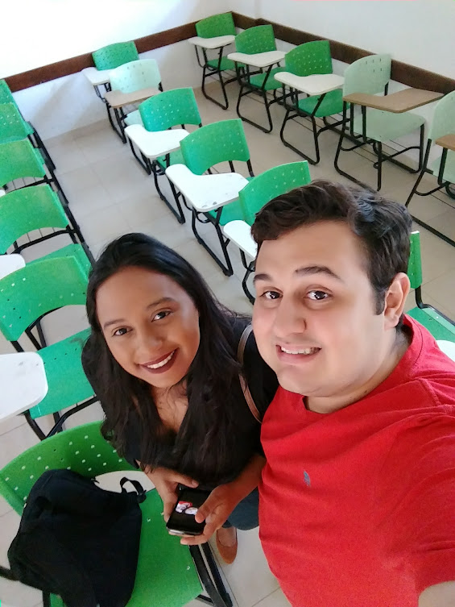

Formação
Formação Complementar
Habilidades
Contato

Guilherme Duarte Viana
Formação
Sistemas da Informação - IFPR Instituto Federal do Paraná - Em Andamento
Ciências Contábeis pela Universidade Federal do Tocantins - UFT (2018)
Especialização em andamento em Contabilidade Pública (Carga Horária: 360h) - Faculdade do Grupo UNIASSELVI
Formação Complementar
LIBRAS - Língua Brasileira de Sinais (Carga horária: 160h) - SENAI - Departamento Regional de Tocantins, SENAI/DR/TO, Brasil
LIBRAS - Básico ao Intermediário (Carga horária: 30h) - Adriano Ruan Libras, ADRIANO RUAN, Brasil
Gestão Financeira e Contabilidade para o Terceiro Setor (Carga horária: 4h) - Conselho Regional de Contabilidade do Tocantins, CRC TO, Brasil
Semana Acadêmica de Ciências Contábeis - Prof. Dr. José Carlos Marion (Carga horária: 12h) - Universidade Federal do Tocantins, UFT, Brasil
Habilidades
Proatividade
Gestão de Projetos
Análise de Dados
Contato
Endereço Eletrônico:
E-mail para contato: guiduarteviana@gmail.com